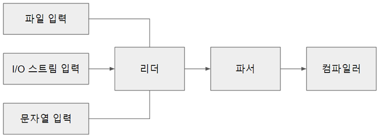
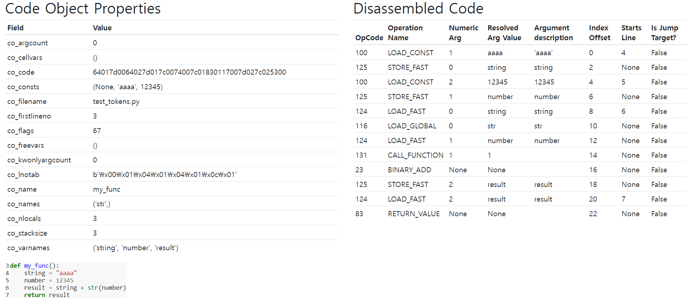
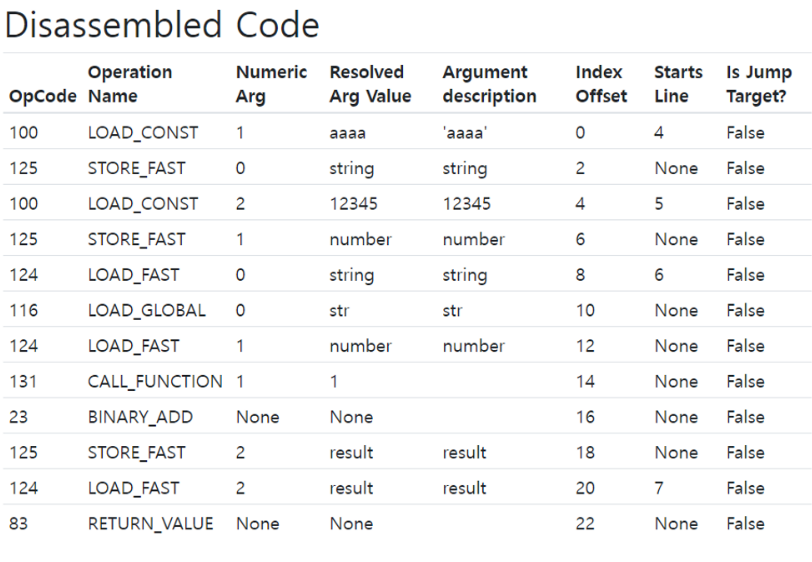

7. 컴파일러#

파이썬 코드를 파싱하면 연산자, 함수, 클래스, 이름 공간을 포함하는 AST가 생성
AST를 CPU 명령으로 바꾸는 것이 컴파일러
컴파일 과정#
 컴파일 과정을 그림으로 표현
컴파일 과정을 그림으로 표현
앞장에서 본 렉싱과 파서를 통하여 생성한 AST를 컴파일러를 통하여 CFG(Control Flow Graph)로 변환
어셈블러를 통하여 CFG의 노드를 순서대로 바이트 코드로 변환 후 실행
컴파일과 관련된 소스#
파일 |
목적 |
|---|---|
Python/compile.c |
컴파일러의 구현 |
Include/compile.h |
컴파일러 API와 타입 정의 |
PyAST_CompileObject() CPython 컴파일러의 주 진입점
 컴파일러 상태는 심벌 테이블을 담는 타입
컴파일러 상태는 심벌 테이블을 담는 타입
심벌 테이블은 변수 이름을 포함하고 추가로 하위 심벌 테이블을 포함할 수 있음
컴파일러 타입에는 컴파일러 유닛도 포함
각 컴파일러 유닛은 이름, 변수 이름, 상수, 셀(cell) 변수들을 포함
컴파일러 유닛은 기본 프레임 블록을 포함
기본 프레임 블록은 바이트코드 명령을 포함
컴파일러 인스턴스 생성#
컴파일러를 실행하기 앞서 전역 컴파일러 상태가 생성
compiler 타입은 컴파일러 플래그, 스택, PyArena 등 컴파일러를 위한 다양한 프로퍼티를 포함
컴파일러 상태는 심벌 테이블 등의 다른 구조체도 포함
struct compiler {
PyObject *c_filename;
struct symtable *c_st;
PyFutureFeatures *c_future; /* pointer to module's __future__ */
PyCompilerFlags *c_flags;
int c_optimize; /* optimization level */
int c_interactive; /* true if in interactive mode */
int c_nestlevel;
int c_do_not_emit_bytecode; /* The compiler won't emit any bytecode
if this value is different from zero.
This can be used to temporarily visit
nodes without emitting bytecode to
check only errors. */
PyObject *c_const_cache; /* Python dict holding all constants,
including names tuple */
struct compiler_unit *u; /* compiler state for current block */
PyObject *c_stack; /* Python list holding compiler_unit ptrs */
PyArena *c_arena; /* pointer to memory allocation arena */
};
PyAST_CompileObject()가 다음과 같이 컴파일러 상태 초기화
모듈에 문서화 문자열(__doc__)이 없다면 빈 문서화 문자열 생성
__annotations__ 프로퍼티도 동일 작업 수행
스택 트레이스 및 예외 처리에 필요한 파일 이름을 컴파일러 상태에 설정
인터프리터가 사용한 메모리 할당 아레나(arena)를 컴파일러의 메모리 할당 아레나로 설정 (메모리 할당자는 9장 메모리 관리 참고)
코드 컴파일 전 퓨처 플래그들을 설정
퓨처 플래그와 컴파일러 플래그#
컴파일러 기능 설정
환경 변수 명령줄 플래그를 담는 구성 상태
모듈 소스 코드의 __future__ 문
퓨처 플래그는 Python 2와 3 간 이식 지원을 위해 사용
컴파일러 플래그는 실행 환경에 의존적, 실행 방식을 변경 할 수 있음
예시로 -O 플래그는 디버그 용도의 assert 문을 비활성화 하는 최적화를 진행
PYTHONOPTIMIZE=1 환경 변수로도 활성화 가능
심벌 테이블#
코드 컴파일 전 PySymtable_BuildObject() API로 심벌 테이블 생성
전역, 지역 등 이름 공간 목록을 컴파일러에 제공
컴파일러는 심벌 테이블에서 얻은 이름 공간에서 스코프를 결정, 참조를 실행
struct symtable {
PyObject *st_filename; /* name of file being compiled,
decoded from the filesystem encoding */
struct _symtable_entry *st_cur; /* current symbol table entry */
struct _symtable_entry *st_top; /* symbol table entry for module */
PyObject *st_blocks; /* dict: map AST node addresses
* to symbol table entries */
PyObject *st_stack; /* list: stack of namespace info */
PyObject *st_global; /* borrowed ref to st_top->ste_symbols */
int st_nblocks; /* number of blocks used. kept for
consistency with the corresponding
compiler structure */
PyObject *st_private; /* name of current class or NULL */
PyFutureFeatures *st_future; /* module's future features that affect
the symbol table */
int recursion_depth; /* current recursion depth */
int recursion_limit; /* recursion limit */
};
컴파일러당 하나의 symtable 인스턴스만 사용, 공간 관리 중요
두 클래스가 동일한 이름의 메서드를 가지고 있을 경우 모듈에서 어떤 메서드를 호출할지 정해주는 것
하위 스코프의 변수를 상위 스코프에서 사용하지 못하게 하는 것
위 두 가지가 symtable의 역할
심벌 테이블 구현#
symtable.c 에서 찾을 수 있다
주 인터페이스는 PySymtable_BuildObject()
mod_ty 타입(Module, Interactive, Expression, FunctionType)에 따라 모듈 내의 문장을 순회
mod_ty 타입인 AST의 노드의 분기를 재귀적으로 탐색하며 symtable의 엔트리로 추가
struct symtable *
PySymtable_BuildObject(mod_ty mod, PyObject *filename, PyFutureFeatures *future)
{
struct symtable *st = symtable_new();
asdl_seq *seq;
int i;
PyThreadState *tstate;
int recursion_limit = Py_GetRecursionLimit();
int starting_recursion_depth;
...
st->st_top = st->st_cur;
switch (mod->kind) {
case Module_kind:
seq = mod->v.Module.body;
for (i = 0; i < asdl_seq_LEN(seq); i++)
if (!symtable_visit_stmt(st,
(stmt_ty)asdl_seq_GET(seq, i)))
goto error;
break;
case Expression_kind:
if (!symtable_visit_expr(st, mod->v.Expression.body))
goto error;
break;
case Interactive_kind:
seq = mod->v.Interactive.body;
for (i = 0; i < asdl_seq_LEN(seq); i++)
if (!symtable_visit_stmt(st,
(stmt_ty)asdl_seq_GET(seq, i)))
goto error;
break;
case FunctionType_kind:
PyErr_SetString(PyExc_RuntimeError,
"this compiler does not handle FunctionTypes");
goto error;
}
...
모듈의 각 문을 순회, symtable_visit_stmt() 를 호출
Parser → Python.asdl에서 정의한 모든문 타입에 대한 case를 가지고 있는 거대한 swich 문
각 문 타입마다 심벌을 처리하는 함수 존재
함수 정의문 타입을 처리하는 함수는 다음 처리를 위한 로직이 있다
현재 재귀 깊이가 제귀 제한을 넘지 않았는지 검사
함수가 함수 객체로 넘겨지거나 호출될 수 있도록 함수 이름 심벌 테이블에 추가
기본 인자 중 리터럴이 아닌 인자는 심벌 테이블에서 찾음
타입 힌트 처리
함수 데코레이터 처리
마지막으로 symtable_enter_block()이 함수 블록을 방문해 인자와 함수 본문 처리
이렇게 생성된 심벌 테이블은 컴파일러로 넘김
핵심 컴파일 과정#
// Python/compile.c
* This file compiles an abstract syntax tree (AST) into Python bytecode.
*
* The primary entry point is PyAST_Compile(), which returns a
* PyCodeObject. The compiler makes several passes to build the code
* object:
* 1. Checks for future statements. See future.c
* 2. Builds a symbol table. See symtable.c.
* 3. Generate code for basic blocks. See compiler_mod() in this file.
* 4. Assemble the basic blocks into final code. See assemble() in
* this file.
* 5. Optimize the byte code (peephole optimizations). See peephole.c
PyAST_CompileObject()에 컴파일러 상태와 symtable, AST로 파싱된 모듈이 준비되면 컴파일이 시작됨
컴파일러 상태(future.c), 심벌 테이블(symtable.c), AST(parser.c)를 Control Flow Graph로 변환
논리 오류나 코드 오류를 탐지해 실행 단계를 런타임 예외로부터 보호함
python에서 컴파일러 사용하기#
내장 함수인 compile()로 컴파일러를 직접 호출할 수 있음
>>> co = compile("b + 1", "test.py", "eval") # compile는 code object를 반환함
>>> co
<code object <module> at 0x7f6f8e8e2040, file "test.py", line 1>
>>> co.co_code # 컴파일된 코드는 co_code 속성에 담김
b'e\x00d\x00\x17\x00S\x00'
컴파일된 코드를 바이트코드 명령어 형태로 보기 위해서는 바이트코드 역어셈블러 모듈 dis를 사용하면 됨
>>> import dis
>>> dis.dis(co.co_code) # 컴파일된 코드는 바이트코드 명령어 순서로 실행됨
0 LOAD_NAME 0 (0)
2 LOAD_CONST 0 (0)
4 BINARY_ADD
6 RETURN_VALUE
instaviz 모듈을 이용해서도, code object와 bytecode를 확인할 수 있음

컴파일러 C API 간단 설명#
compiler_mod 는 compiler와 mod를 입력으로 받아서 최종적으로 코드 객체를 반환함
compiler_mod 내의 compiler_body를 통해서 일련의 명령을 담고 있는 블록 리스트를 얻음
compiler_mod 내의 assemble는 일련의 명령을 담고 있는 블록 리스트를 입력으로 받아서 코드 객체를 반환함
assemble 내의 dfs를 통해서 일련의 명령을 담고 있는 블록 리스트를 입력으로 받아서 Control Flow Graph 형태로 변환함
assemble 내의 makecode를 통해서 Control Flow Graph 형태를 입력으로 받아서 코드 객체를 반환함
makecode 내의 PyCode_Optimize를 통해서 핍홀 최적화된 바이트코드를 반환함
makecode 내의 PyCode_NewWithPosOnlyArgs를 통해서 최적화된 바이트 코드를 코드 객체를 반환함
컴파일러 C API#
AST 모듈 컴파일의 진입점인 compiler_mod(struct compiler *c, mod_ty mod)는 모듈 타입에 따라 다른 컴파일러 함수를 사용함
mod가 Module일 경우 모듈은 컴파일러 유닛으로 컴파일되어 c_stack 프로퍼티에 저장됨
컴파일러 유닛 스택에서 PyCodeObject를 생성하기 위해 assemble() 을 실행함
// Python/compile.c
static PyCodeObject *
compiler_mod(**struct compiler *c**, **mod_ty mod**)
{
**PyCodeObject *co;
int addNone = 1;
static PyObject *module;**
if (!module) {
module = PyUnicode_InternFromString("<module>");
if (!module)
return NULL;
}
/* Use 0 for firstlineno initially, will fixup in assemble(). */
if (!compiler_enter_scope(c, module, COMPILER_SCOPE_MODULE, mod, 0))
return NULL;
**switch (mod->kind) {
case Module_kind:
if (!compiler_body(c, mod->v.Module.body)) {
compiler_exit_scope(c);
return 0;
}
break;**
case Interactive_kind:
if (find_ann(mod->v.Interactive.body)) {
ADDOP(c, SETUP_ANNOTATIONS);
}
c->c_interactive = 1;
VISIT_SEQ_IN_SCOPE(c, stmt,
mod->v.Interactive.body);
break;
case Expression_kind:
VISIT_IN_SCOPE(c, expr, mod->v.Expression.body);
addNone = 0;
break;
default:
PyErr_Format(PyExc_SystemError,
"module kind %d should not be possible",
mod->kind);
return 0;
}
**co = assemble(c, addNone);**
compiler_exit_scope(c);
return co;
}
compiler_body() 는 모듈의 각 문(함수, 클래스, for, while …)을 순회하면 방문함
AST 노드 타입을 확인하는 asdl_seq_GET() 호출을 통해 이 문의 타입이 결정됨
// Python/compile.c
static int
compiler_body(struct compiler *c, asdl_seq *stmts)
{
int i = 0;
stmt_ty st;
PyObject *docstring;
/* Set current line number to the line number of first statement.
This way line number for SETUP_ANNOTATIONS will always
coincide with the line number of first "real" statement in module.
If body is empty, then lineno will be set later in assemble. */
if (c->u->u_scope_type == COMPILER_SCOPE_MODULE && asdl_seq_LEN(stmts)) {
st = (stmt_ty)asdl_seq_GET(stmts, 0);
SET_LOC(c, st);
}
/* Every annotated class and module should have __annotations__. */
if (find_ann(stmts)) {
ADDOP(c, SETUP_ANNOTATIONS);
}
if (!asdl_seq_LEN(stmts))
return 1;
/* if not -OO mode, set docstring */
if (c->c_optimize < 2) {
docstring = _PyAST_GetDocString(stmts);
if (docstring) {
i = 1;
st = (stmt_ty)asdl_seq_GET(stmts, 0);
assert(st->kind == Expr_kind);
VISIT(c, expr, st->v.Expr.value);
if (!compiler_nameop(c, __doc__, Store))
return 0;
}
}
**for (; i < asdl_seq_LEN(stmts); i++)
VISIT(c, stmt, (stmt_ty)asdl_seq_GET(stmts, i));
return 1;**
}
VISIT 매크로는 각 문 타입에 해당하는 ****Python/compile.c의 함수를 호출함
// Python/compile.c
#define VISIT(C, TYPE, V) {\
if (!compiler_visit_ ## TYPE((C), (V))) \
return 0; \
}
모든 문을 포괄하는 stmt 타입의 경우 컴파일러는 compiler_visit_stmt를 호출해 Parser/Python.asdl에 정의된 하위문 타입들로 전환함
예를 들어 파이썬 for문이 들어오면 compiler_visit_stmt()는 compiler_for()를 호출함
모든 문과 표현식 타입에는 해당 타입에 대한 compiler_*() 함수가 존재하며, 간단한 타입들은 인라인으로 바이트코드 명령어를 생성하고, 더 복잡한 문 타입들은 다른 함수를 호출함
// Python/compile.c
static int
compiler_visit_stmt(struct compiler *c, stmt_ty s)
{
Py_ssize_t i, n;
/* Always assign a lineno to the next instruction for a stmt. */
SET_LOC(c, s);
switch (s->kind) {
case FunctionDef_kind:
return compiler_function(c, s, 0);
case ClassDef_kind:
return compiler_class(c, s);
case Return_kind:
return compiler_return(c, s);
case Delete_kind:
VISIT_SEQ(c, expr, s->v.Delete.targets)
break;
case Assign_kind:
n = asdl_seq_LEN(s->v.Assign.targets);
VISIT(c, expr, s->v.Assign.value);
for (i = 0; i < n; i++) {
if (i < n - 1)
ADDOP(c, DUP_TOP);
VISIT(c, expr,
(expr_ty)asdl_seq_GET(s->v.Assign.targets, i));
}
break;
case AugAssign_kind:
return compiler_augassign(c, s);
case AnnAssign_kind:
return compiler_annassign(c, s);
**case For_kind:
return compiler_for(c, s);**
case While_kind:
return compiler_while(c, s);
case If_kind:
return compiler_if(c, s);
case Raise_kind:
n = 0;
if (s->v.Raise.exc) {
VISIT(c, expr, s->v.Raise.exc);
n++;
if (s->v.Raise.cause) {
VISIT(c, expr, s->v.Raise.cause);
n++;
}
}
ADDOP_I(c, RAISE_VARARGS, (int)n);
break;
case Try_kind:
return compiler_try(c, s);
case Assert_kind:
return compiler_assert(c, s);
case Import_kind:
return compiler_import(c, s);
case ImportFrom_kind:
return compiler_from_import(c, s);
case Global_kind:
case Nonlocal_kind:
break;
case Expr_kind:
return compiler_visit_stmt_expr(c, s->v.Expr.value);
case Pass_kind:
break;
case Break_kind:
return compiler_break(c);
case Continue_kind:
return compiler_continue(c);
case With_kind:
return compiler_with(c, s, 0);
case AsyncFunctionDef_kind:
return compiler_function(c, s, 1);
case AsyncWith_kind:
return compiler_async_with(c, s, 0);
case AsyncFor_kind:
return compiler_async_for(c, s);
}
return 1;
컴파일러는 일련의 명령을 담고 있는 블록을 컴파일러 상태로 내보냄
명령 구조체는 명령 코드와 인자, 문장이 위치한 줄번호를 포함함

점프 명령일 경우 점프할 블록에 대한 포인터도 포함함
점프 명령은 한 명령에서 다른 명령으로의 점프를 실행하면, 절대 점프 방식(코드 객체 상에서 정확한 명령의 위치를 대상으로 사용)과 상대 점프 방식(다른 명령을 기준으로 점프 대상을 지정)의 점프 명령을 사용할 수 있음
컴파일 단계가 끝나면, 블록 리스트가 완성되고, 각 프레임 블록은 명령 리스트와 다음 블록을 가리키는 포인터를 가짐
어셈블러는 기본 프레임 블록들에 깊이 우선 탐색(DFS)를 실행하고, 명령들을 단일한 바이트 코드 시퀀스로 병합함
// Python/compile.c
static PyCodeObject *
assemble(struct compiler *c, int addNone)
{
basicblock *b, *entryblock;
struct assembler a;
int i, j, nblocks;
PyCodeObject *co = NULL;
/* Make sure every block that falls off the end returns None.
XXX NEXT_BLOCK() isn't quite right, because if the last
block ends with a jump or return b_next shouldn't set.
*/
if (!c->u->u_curblock->b_return) {
NEXT_BLOCK(c);
if (addNone)
ADDOP_LOAD_CONST(c, Py_None);
ADDOP(c, RETURN_VALUE);
}
nblocks = 0;
entryblock = NULL;
for (b = c->u->u_blocks; b != NULL; b = b->b_list) {
nblocks++;
entryblock = b;
}
/* Set firstlineno if it wasn't explicitly set. */
if (!c->u->u_firstlineno) {
if (entryblock && entryblock->b_instr && entryblock->b_instr->i_lineno)
c->u->u_firstlineno = entryblock->b_instr->i_lineno;
else
c->u->u_firstlineno = 1;
}
if (!assemble_init(&a, nblocks, c->u->u_firstlineno))
goto error;
**dfs(c, entryblock, &a, nblocks);**
/* Can't modify the bytecode after computing jump offsets. */
assemble_jump_offsets(&a, c);
/* Emit code in reverse postorder from dfs. */
for (i = a.a_nblocks - 1; i >= 0; i--) {
b = a.a_postorder[i];
for (j = 0; j < b->b_iused; j++)
if (!assemble_emit(&a, &b->b_instr[j]))
goto error;
}
if (_PyBytes_Resize(&a.a_lnotab, a.a_lnotab_off) < 0)
goto error;
if (_PyBytes_Resize(&a.a_bytecode, a.a_offset * sizeof(_Py_CODEUNIT)) < 0)
goto error;
**co = makecode(c, &a);**
error:
assemble_free(&a);
return co;
}
어셈블러는 기본 프레임 블록 그래프를 DFS로 탐색하는데, 기본 프레임 블록 그래프는 트리 구조인 CST와 AST와 노드가 명령을 담는 헝태의 그래프임
어셈블러는 DFS를 사용해 기본 프레임 블록 그래프를 Control Flow Graph 형태로 변환함
// Python/compile.c
static void
dfs(struct compiler *c, basicblock *b, struct assembler *a, int end)
{
int i, j;
/* Get rid of recursion for normal control flow.
Since the number of blocks is limited, unused space in a_postorder
(from a_nblocks to end) can be used as a stack for still not ordered
blocks. */
for (j = end; b && !b->b_seen; b = b->b_next) {
b->b_seen = 1;
assert(a->a_nblocks < j);
a->a_postorder[--j] = b;
}
while (j < end) {
b = a->a_postorder[j++];
for (i = 0; i < b->b_iused; i++) {
struct instr *instr = &b->b_instr[i];
if (instr->i_jrel || instr->i_jabs)
dfs(c, instr->i_target, a, j);
}
assert(a->a_nblocks < j);
a->a_postorder[a->a_nblocks++] = b;
}
}
makecode는 compiler와 assembler를 입력으로 받아서 코드 객체를 생성함
PyCode_NewWithPosOnlyArgs()를 실행하기 전에 PyCode_Optimize()를 통해서 Python/peephole.c에서 제공하는 바이트코드 최적으로 진행한다
바이트코드 명령을 확인하고 특정 시나리오에 해당될 경우 해당 명령을 다른 명령으로 교체해주는 작업을 함, 예를 들어 return 문 뒤의 도달할 수 없는 명령을 제거하는 것
핍홀 최적화는 소규모의 명령 집합을 동등하거나 더 나은 성능을 제공하는 하나의 명령어나 더 짧은 명령어로 변환하는 방식으로 이루어짐
static PyCodeObject *
makecode(struct compiler *c, struct assembler *a)
{
PyObject *tmp;
PyCodeObject *co = NULL;
PyObject *consts = NULL;
PyObject *names = NULL;
PyObject *varnames = NULL;
PyObject *name = NULL;
PyObject *freevars = NULL;
PyObject *cellvars = NULL;
PyObject *bytecode = NULL;
Py_ssize_t nlocals;
int nlocals_int;
int flags;
int posorkeywordargcount, posonlyargcount, kwonlyargcount, maxdepth;
consts = consts_dict_keys_inorder(c->u->u_consts);
names = dict_keys_inorder(c->u->u_names, 0);
varnames = dict_keys_inorder(c->u->u_varnames, 0);
if (!consts || !names || !varnames)
goto error;
cellvars = dict_keys_inorder(c->u->u_cellvars, 0);
if (!cellvars)
goto error;
freevars = dict_keys_inorder(c->u->u_freevars, PyTuple_GET_SIZE(cellvars));
if (!freevars)
goto error;
if (!merge_const_tuple(c, &names) ||
!merge_const_tuple(c, &varnames) ||
!merge_const_tuple(c, &cellvars) ||
!merge_const_tuple(c, &freevars))
{
goto error;
}
nlocals = PyDict_GET_SIZE(c->u->u_varnames);
assert(nlocals < INT_MAX);
nlocals_int = Py_SAFE_DOWNCAST(nlocals, Py_ssize_t, int);
flags = compute_code_flags(c);
if (flags < 0)
goto error;
**bytecode = PyCode_Optimize(a->a_bytecode, consts, names, a->a_lnotab);**
if (!bytecode)
goto error;
tmp = PyList_AsTuple(consts); /* PyCode_New requires a tuple */
if (!tmp)
goto error;
Py_DECREF(consts);
consts = tmp;
if (!merge_const_tuple(c, &consts)) {
goto error;
}
posonlyargcount = Py_SAFE_DOWNCAST(c->u->u_posonlyargcount, Py_ssize_t, int);
posorkeywordargcount = Py_SAFE_DOWNCAST(c->u->u_argcount, Py_ssize_t, int);
kwonlyargcount = Py_SAFE_DOWNCAST(c->u->u_kwonlyargcount, Py_ssize_t, int);
maxdepth = stackdepth(c);
if (maxdepth < 0) {
goto error;
}
**co = PyCode_NewWithPosOnlyArgs(posonlyargcount+posorkeywordargcount,
posonlyargcount, kwonlyargcount, nlocals_int,
maxdepth, flags, bytecode, consts, names,
varnames, freevars, cellvars, c->c_filename,
c->u->u_name, c->u->u_firstlineno, a->a_lnotab);**
error:
Py_XDECREF(consts);
Py_XDECREF(names);
Py_XDECREF(varnames);
Py_XDECREF(name);
Py_XDECREF(freevars);
Py_XDECREF(cellvars);
Py_XDECREF(bytecode);
return co;
}
예제: ‘거의 같음’ 연산자 구현하기#
6장 예제에서 이어서 진행
Include/object.h 수정 ← PyObject의 비교 함수에서 참조할 수 있도록 Py_AlE 연산자에 대한 #define 정의를 추가해야 함
// Include/object.h /* Rich comparison opcodes */ #define Py_LT 0 #define Py_LE 1 #define Py_EQ 2 #define Py_NE 3 #define Py_GT 4 #define Py_GE 5 **#define Py_AlE 6 // PyObject의 비교 함수에서 참조할 수 있도록, Py_AlE 연산자에 대한 #define 정의를 추가** /* * Macro for implementing rich comparisons * * Needs to be a macro because any C-comparable type can be used. */ #define Py_RETURN_RICHCOMPARE(val1, val2, op) \ do { \ switch (op) { \ case Py_EQ: if ((val1) == (val2)) Py_RETURN_TRUE; Py_RETURN_FALSE; \ case Py_NE: if ((val1) != (val2)) Py_RETURN_TRUE; Py_RETURN_FALSE; \ case Py_LT: if ((val1) < (val2)) Py_RETURN_TRUE; Py_RETURN_FALSE; \ case Py_GT: if ((val1) > (val2)) Py_RETURN_TRUE; Py_RETURN_FALSE; \ case Py_LE: if ((val1) <= (val2)) Py_RETURN_TRUE; Py_RETURN_FALSE; \ case Py_GE: if ((val1) >= (val2)) Py_RETURN_TRUE; Py_RETURN_FALSE; \ **case Py_AlE: if ((val1) == (val2)) Py_RETURN_TRUE; Py_RETURN_FALSE; \ // 비교 연산을 구현하기 위한 매크로에 Py_AlE에 대한 case를 추가** default: \ Py_UNREACHABLE(); \ } \ } while (0)Objects/object.c 수정 ← Py_AlE도 사용할 수 있도록 해야 함
// Objects/object.c /* Map rich comparison operators to their swapped version, e.g. LT <--> GT */ **int _Py_SwappedOp[] = {Py_GT, Py_GE, Py_EQ, Py_NE, Py_LT, Py_LE, Py_AlE}; // Py_AlE를 연산자 타입의 값으로 사용할 수 있도록 함** **static const char * const opstrings[] = {"<", "<=", "==", "!=", ">", ">=", "~="}; // ~=를 클래스에 구현되지 않았을 때 에러메시지를 표시하는데 사용할 수 있도록 함** .... PyObject * PyObject_RichCompare(PyObject *v, PyObject *w, int op) { PyThreadState *tstate = _PyThreadState_GET(); **assert(Py_LT <= op && op <= Py_AlE); // Py_AlE의 값인 6도 혀용할 수 있도록 수정, 기존에는 0 ~ 5 사이의 값을 확인했지만, 이제는 0 ~ 6 사이의 값을 확인함** if (v == NULL || w == NULL) { if (!_PyErr_Occurred(tstate)) { PyErr_BadInternalCall(); } return NULL; } if (_Py_EnterRecursiveCall(tstate, " in comparison")) { return NULL; } PyObject *res = do_richcompare(tstate, v, w, op); _Py_LeaveRecursiveCall(tstate); return res; }
Lib/opcode.py 수정 ← ~= 를 비교 연산자로 사용할 수 있게 함
# Lib/opcode.py try: from _opcode import stack_effect __all__.append('stack_effect') except ImportError: pass **cmp_op = ('<', '<=', '==', '!=', '>', '>=', '~=') # 비교 연산자 리스트에 ~= 를 추가**
Python/compile.c 수정 ← Py_AlE의 바이트 코드를 생성할 수 있도록 함
static int compiler_addcompare(struct compiler *c, cmpop_ty op) { int cmp; switch (op) { case Eq: cmp = Py_EQ; break; case NotEq: cmp = Py_NE; break; case Lt: cmp = Py_LT; break; case LtE: cmp = Py_LE; break; case Gt: cmp = Py_GT; break; case GtE: cmp = Py_GE; break; **case AlE: cmp = Py_AlE; // PyCmp_AlE인 BinOp 노드를 처리할 수 있도록 수정 break;** case Is: ADDOP_I(c, IS_OP, 0); return 1; case IsNot: ADDOP_I(c, IS_OP, 1); return 1; case In: ADDOP_I(c, CONTAINS_OP, 0); return 1; case NotIn: ADDOP_I(c, CONTAINS_OP, 1); return 1; default: Py_UNREACHABLE(); } ADDOP_I(c, COMPARE_OP, cmp); return 1; }
Objects/floatobject.c 수정 ← 거의 같음 연산자의 로직을 추가함
// Objects/floatobject.c Compare: switch (op) { case Py_EQ: r = i == j; break; case Py_NE: r = i != j; break; case Py_LE: r = i <= j; break; case Py_GE: r = i >= j; break; case Py_LT: r = i < j; break; case Py_GT: r = i > j; break; **case Py_AlE: { // 거의 같음 연산자를 수행할 수 있도록 추가 double diff = fabs(i - j); double rel_tol = 1e-9; double abs_tol = 0.1; r = (((diff <= fabs(rel_tol * j)) || (diff <= fabs(rel_tol * i))) || (diff <= abs_tol)); } break;** } return PyBool_FromLong(r);
Python/ceval.c 수정 ← 거의 같음 연산자의 평가 루프를 추가함
// Python/ceval.c case TARGET(COMPARE_OP): { **assert(oparg <= Py_AlE); // 평가 루프 수정, 자세한 내용은 다음 장에서 다룸** PyObject *right = POP(); PyObject *left = TOP(); PyObject *res = PyObject_RichCompare(left, right, oparg); SET_TOP(res); Py_DECREF(left); Py_DECREF(right); if (res == NULL) goto error; PREDICT(POP_JUMP_IF_FALSE); PREDICT(POP_JUMP_IF_TRUE); DISPATCH(); }
결과
make regen-token regen-pegen make regen-ast make -j2 -s ./python # 결과 >>> 1.0 ~= 1.01 True >>> 1.0 == 1.01 False >>> 1.1 ~= 1.101 True >>> 1.1 == 1.101 False >>> 1.0 ~= 1.5 False # 추가로 COMPARE_OP에 ~=가 추가되었음을 알 수 있음 >>> co = compile("1.0 ~= 1.01", "test.py", "eval") >>> import dis >>> dis.dis(co.co_code) 0 LOAD_CONST 0 (0) 2 LOAD_CONST 1 (1) 4 COMPARE_OP 6 (~=) 6 RETURN_VALUE
정리 (python 3.13.0 기준)#
소스 코드 → 리더 → 렉서 → 파서 → 컴파일러 → 어셈블러 → 코드 객체 (컴파일은 모듈 단위로 진행됨)
리더는 소스 코드를 입력 받아 텍스트 형태로 반환함
렉서는 텍스트를 입력 받아 토큰 형태(Concrete Syntax Tree)로 반환함 (
Parser/lexer/andParser/tokenizer/)여기서 반환된 토큰은 단순히 토큰의 종류만 구분된 상태로, 파이썬 언어 구조와 의미 요소를 반영하고 있지 않음
파서는 토큰(Concrete Syntax Tree)을 입력 받아 Abstract Syntax Tree로 반환함(
Parser/parser.c)여기서 반환된 Abstract Syntax Tree는 파이썬 언어 구조와 의미 요소를 반영하고 있음
컴파일러는 Abstract Syntax Tree을 입력 받아 instruction sequence로 형태로 변환(
Python/compile.c)한 후 Control Flow Graph를 구성(Python/flowgraph.c)하고 최적화를 진행함Control Flow Graph는 논리적 실행 순서를 나타내지만, CPU가 실행하기 위한 명령어 구조는 아님
어셈블러는 Control Flow Graph를 입력 받아 bytecode 형태로 변환함(
Python/assemble.c)bytecode는 Control Flow Graph를 CPU에서 실행 가능한 명령으로 순차적으로 나열한 형태임
컴파일 과정을 통해서 생성된 코드 객체는 인터프리터로 넘겨저 실행되거나, .pyc 파일에 캐시됨